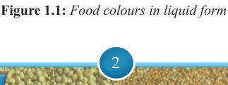
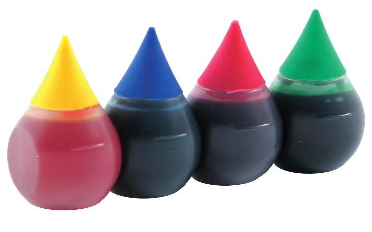

2


Food and Human Nutrition

Form Two
(iii) Must be used in required amounts: Food additives must be used according to
their specifications. The correct amount of it should be used in food.
(iv) Must meet the technological justification: The additives must have a valid
technological function such as preservation, flavour enhancement or colour retention.
(v) Must be compatible: Food additives must be chemically and physically
compatible with the food and other ingredients.
Categories of food additives
Food additives are categorised according to their intended use. They include food colouring agents, preservatives, stabilizers, thickeners, flavour enhancers, artificial sweeteners, emulsifiers, antioxidants, anticaking agents and glazing agents.
Food colouring agents
Food colouring agents are substances used to enhance the visual appeal of food by adding or restoring colour. They are normally used to restore, impart or enhance colour to the food. Food colouring agents are found in liquid or powdered form and can be natural (derived from plants or animals) or artificial (synthetically produced).
Examples of natural colouring agents include beetroot extract (red) chlorophylls
(green), turmeric (yellow) and beta-carotene (orange/yellow). Artificial food colours are chemically produced and they are more stable compared to the natural ones, which means the colour will remain vibrant and consistent over time, even when exposed to factors like heat, light, or air. They are of different colours including red, yellow and blue. Despite their benefits, some food additives may cause allergic reactions, intolerance or sensitivities in certain individuals. Overuse or long term consumption of synthetic additives can pose health risks such as cancer and toxicity in liver and kidney. Figure 1.1 shows food colours in liquid form and Figure 1.2 shows food colours in powder form.

Figure 1.1: Food colours in liquid form

17/09/2025 16:30